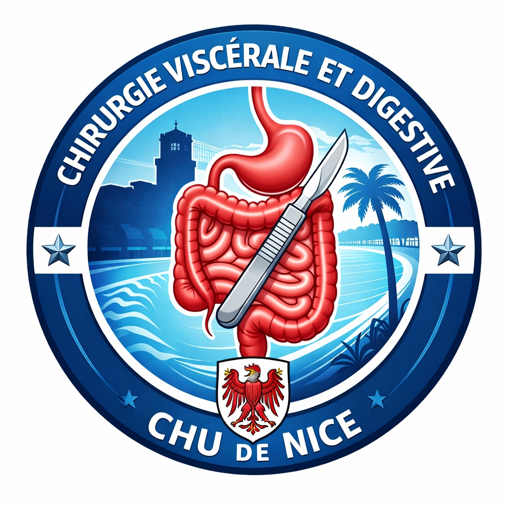

Recours
Chirurgie digestive spécialisée, oncologique, pariétale, robotique et urgences chirurgicales.

Un service hospitalo-universitaire de recours, engagé dans la chirurgie digestive spécialisée, la recherche clinique et la formation des futurs chirurgiens.

Équipe de chirurgie viscérale et digestive du CHU de Nice.
Une organisation lisible pour les patients, les correspondants médicaux, les étudiants et les partenaires académiques.
Chirurgie digestive spécialisée, oncologique, pariétale, robotique et urgences chirurgicales.
Essais cliniques, innovations chirurgicales et collaborations universitaires.
Enseignement des étudiants, internes, fellows et développement de la simulation.